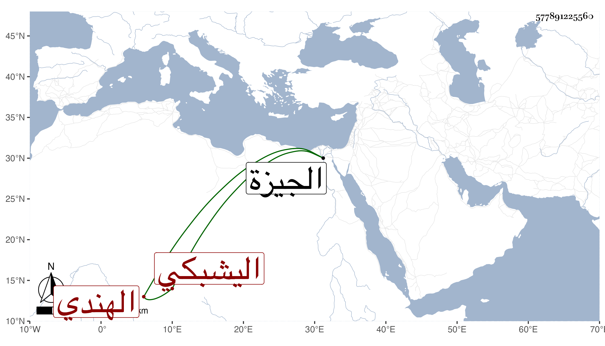

0902Sakhawi.DawLamic.ITO20230111-ara1.EIS1600.577891225560
Biography ID: 577891225560
333
جوهر اليشبكي الهندي المعروف بالتركماني لكونه على الاشهر معتق أخت يشبك الجكمي أميراخور زوجة أقبغا التركماني بل قيل انه معتق يشبك نفسه . اتصل بعد موت أقبغا ببيت السلطان وصار بعد مدة شاد الحوش ثم استقر في دولة الظاهر خشقدم في الزمامية والخازندارية بالبذل بعد عزل لولو الاشرفي في أوائل سنة خمس وستين أو أوائل التي بعدها مع كونه من صغار الخدام ، واستمر حتى مات بعد تمرضه أشهرا في ليلة الجمعة مستهل جمادى الأولى سنة ثلاث وسبعين وحضر السلطان الصلاة عليه قبل الجمعة بالمؤمني ، ودفن بالصحراء وقد ناهز الستين وهو صاحب البستان الذي أنشأه بقرية دموة بالجيزة .
